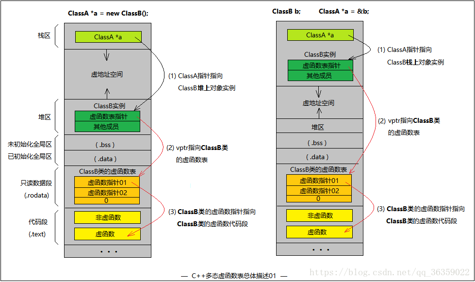
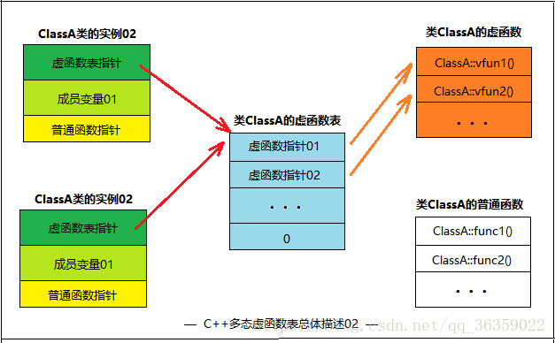
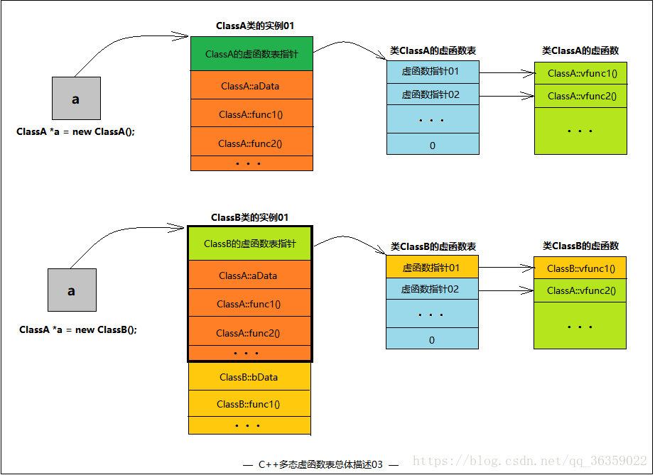
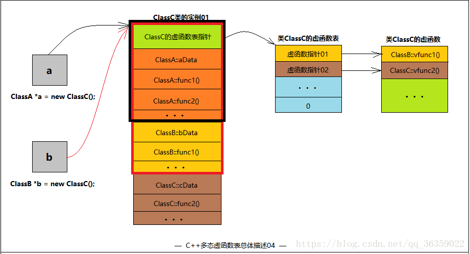
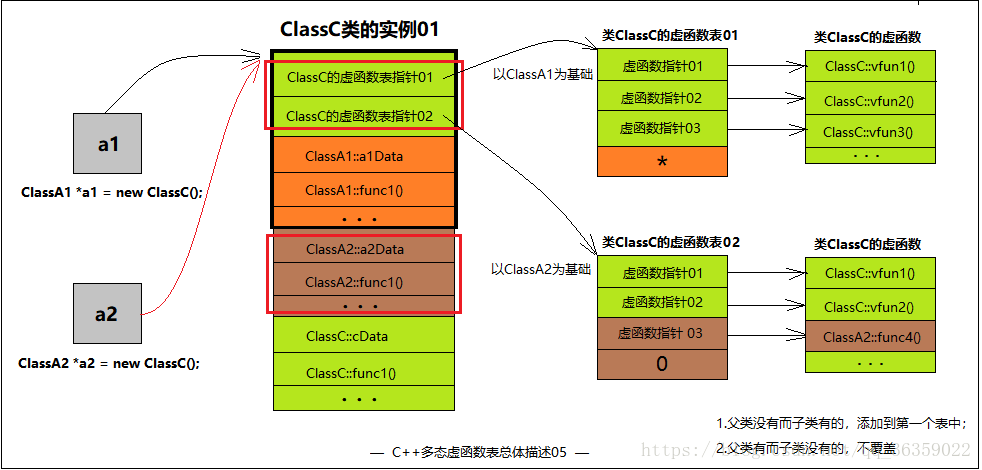

本文关键词：C++ 多态 多继承 多重继承 虚函数表 虚函数指针 动态绑定
概述：C++相对其他面向对象语言来说，之所以灵活、高效。很大程度的占比在于其多态技术和模板技术。C++虚函数表是支撑C++多态的重要技术，它是C++动态绑定技术的核心。
本文章将着重图解虚函数表相关知识，在阅读本文前，博主已经默认你已经学习了C++多态的语法，并且通过代码实践过。
一、多态起手式以及内存分布
假设有一个基类ClassA，一个继承了该基类的派生类ClassB，并且基类中有虚函数，派生类实现了基类的虚函数。
我们在代码中运用多态这个特性时，通常以两种方式起手：
1
2
| (1) ClassA *a = new ClassB();
(2) ClassB b; ClassA *a = &b;
|
以上两种方式都是用基类指针去指向一个派生类实例，区别在于第1个用了new关键字而分配在堆上，第2个分配在栈上。

请看上图，不同两种方式起手仅仅影响了派生类对象实例存在的位置。
以左图为例，ClassA *a是一个栈上的指针。
该指针指向一个在堆上实例化的子类对象。基类如果存在虚函数，那么在子类对象中，除了成员函数与成员变量外，编译器会自动生成一个指向**该类的虚函数表(这里是类ClassB)**的指针，叫作虚函数表指针。通过虚函数表指针，父类指针即可调用该虚函数表中所有的虚函数。
二、类的虚函数表与类实例的虚函数指针
首先不考虑继承的情况。如果一个类中有虚函数，那么该类就有一个虚函数表。
这个虚函数表是属于类的，所有该类的实例化对象中都会有一个虚函数表指针去指向该类的虚函数表。
从第一部分的图中我们也能看到，一个类的实例要么在堆上，要么在栈上。也就是说一个类可以有很多很多个实例。但是！一个类只能有一个虚函数表。在编译时，一个类的虚函数表就确定了，这也是为什么它放在了只读数据段中。

三、多态代码及多重继承情况
1
2
3
4
5
6
7
8
9
10
11
12
13
14
15
16
17
18
19
20
21
22
23
24
25
26
27
28
29
30
31
32
33
34
35
36
37
38
| class ClassA
{
public:
ClassA() { cout << "ClassA::ClassA()" << endl; }
virtual ~ClassA() { cout << "ClassA::~ClassA()" << endl; }
void func1() { cout << "ClassA::func1()" << endl; }
void func2() { cout << "ClassA::func2()" << endl; }
virtual void vfunc1() { cout << "ClassA::vfunc1()" << endl; }
virtual void vfunc2() { cout << "ClassA::vfunc2()" << endl; }
private:
int aData;
};
class ClassB : public ClassA
{
public:
ClassB() { cout << "ClassB::ClassB()" << endl; }
virtual ~ClassB() { cout << "ClassB::~ClassB()" << endl; }
void func1() { cout << "ClassB::func1()" << endl; }
virtual void vfunc1() { cout << "ClassB::vfunc1()" << endl; }
private:
int bData;
};
class ClassC : public ClassB
{
public:
ClassC() { cout << "ClassC::ClassC()" << endl; }
virtual ~ClassC() { cout << "ClassC::~ClassC()" << endl; }
void func2() { cout << "ClassC::func2()" << endl; }
virtual void vfunc2() { cout << "ClassC::vfunc2()" << endl; }
private:
int cData;
};
|
在第二部分中，我们讨论了在没有继承的情况下，虚函数表的逻辑结构。
那么在有继承情况下，只要基类有虚函数，子类不论实现或没实现，都有虚函数表。
请看上面代码
(1) ClassA是基类, 有普通函数: func1() func2() 。虚函数: vfunc1() vfunc2() ~ClassA()
(2) ClassB继承ClassA, 有普通函数: func1()。虚函数: vfunc1() ~ClassB()
(3) ClassC继承ClassB, 有普通函数: func2()。虚函数: vfunc2() ~ClassB()
基类的虚函数表和子类的虚函数表不是同一个表。下图是基类实例与多态情形下，数据逻辑结构。注意，虚函数表是在编译时确定的，属于类而不属于某个具体的实例。虚函数在代码段，仅有一份。

ClassB继承与ClassA，其虚函数表是在ClassA虚函数表的基础上有所改动的，变化的仅仅是在子类中重写的虚函数。如果子类没有重写任何父类虚函数，那么子类的虚函数表和父类的虚函数表在内容上是一致的。
1
2
3
4
5
| ClassA *a = new ClassB();
a->func1();
a->func2();
a->vfunc1();
a->vfunc2();
|
这个结果不难想象，看上图，ClassA类型的指针a能操作的范围只能是黑框中的范围，之所以实现了多态完全是因为子类的虚函数表指针与虚函数表的内容与基类不同
这个结果已经说明了C++的隐藏、重写(覆盖)特性。
同理，也就不难推导出ClassC的逻辑结构图了
类的继承情况是: ClassC继承ClassB，ClassB继承ClassA
这是一个多次单继承的情况。(多重继承)

1
2
3
4
5
6
7
8
9
10
11
| ClassA* a = new ClassC;
a->func1();
a->func2();
a->vfunc1();
a->vfunc2();
ClassB* b = new ClassC;
b->func1();
b->func2();
b->vfunc1();
b->vfunc2();
|
四、多继承下的虚函数表 (同时继承多个基类)
多继承是指一个类同时继承了多个基类，假设这些基类都有虚函数，也就是说每个基类都有虚函数表，那么该子类的逻辑结果和虚函数表是什么样子呢？
1
2
3
4
5
6
7
8
9
10
11
12
13
14
15
16
17
18
19
20
21
22
23
24
25
26
27
28
29
30
31
32
33
34
35
36
37
38
39
40
41
| class ClassA1
{
public:
ClassA1() { cout << "ClassA1::ClassA1()" << endl; }
virtual ~ClassA1() { cout << "ClassA1::~ClassA1()" << endl; }
void func1() { cout << "ClassA1::func1()" << endl; }
virtual void vfunc1() { cout << "ClassA1::vfunc1()" << endl; }
virtual void vfunc2() { cout << "ClassA1::vfunc2()" << endl; }
private:
int a1Data;
};
class ClassA2
{
public:
ClassA2() { cout << "ClassA2::ClassA2()" << endl; }
virtual ~ClassA2() { cout << "ClassA2::~ClassA2()" << endl; }
void func1() { cout << "ClassA2::func1()" << endl; }
virtual void vfunc1() { cout << "ClassA2::vfunc1()" << endl; }
virtual void vfunc2() { cout << "ClassA2::vfunc2()" << endl; }
virtual void vfunc4() { cout << "ClassA2::vfunc4()" << endl; }
private:
int a2Data;
};
class ClassC : public ClassA1, public ClassA2
{
public:
ClassC() { cout << "ClassC::ClassC()" << endl; }
virtual ~ClassC() { cout << "ClassC::~ClassC()" << endl; }
void func1() { cout << "ClassC::func1()" << endl; }
virtual void vfunc1() { cout << "ClassC::vfunc1()" << endl; }
virtual void vfunc2() { cout << "ClassC::vfunc2()" << endl; }
virtual void vfunc3() { cout << "ClassC::vfunc3()" << endl; }
};
|
ClassA1是第一个基类，拥有普通函数func1()，虚函数vfunc1() vfunc2()。
ClassA2是第二个基类，拥有普通函数func1()，虚函数vfunc1() vfunc2()，vfunc4()。
ClassC依次继承ClassA1、ClassA2。普通函数func1(),虚函数vfunc1() vfunc2() vfunc3()。

在多继承情况下，有多少个基类就有多少个虚函数表指针，前提是基类要有虚函数才算上这个基类。
如图，虚函数表指针01指向的虚函数表是以ClassA1的虚函数表为基础的，子类的ClassC::vfunc1(),和vfunc2()的函数指针覆盖了虚函数表01中的虚函数指针01的位置、02位置。当子类有多出来的虚函数时，添加在第一个虚函数表中。
当有多个虚函数表时，虚函数表的结果是0代表没有下一个虚函数表。” * “号位置在不同操作系统中实现不同，代表有下一个虚函数表。
注意：
1.子类虚函数会覆盖每一个父类的每一个同名虚函数。
2.父类中没有的虚函数而子类有，填入第一个虚函数表中，且用父类指针是不能调用。
3.父类中有的虚函数而子类没有，则不覆盖。仅子类和该父类指针能调用。
最后给出代码和结果
1
2
3
4
5
6
7
8
9
10
11
12
13
14
15
16
17
18
| ClassA1 *a1 = new ClassC;
a1->func1();
a1->vfunc1();
a1->vfunc2();
没有a1->vfunc3()，父类没有这个虚函数
ClassA2 *a2 = new ClassC;
a2->func1();
a2->vfunc1();
a2->vfunc2();
a2->vfunc4();
ClassC *c = new ClassC;
c->func1();
c->vfunc1();
c->vfunc2();
c->vfunc3();
c->vfunc4();
|